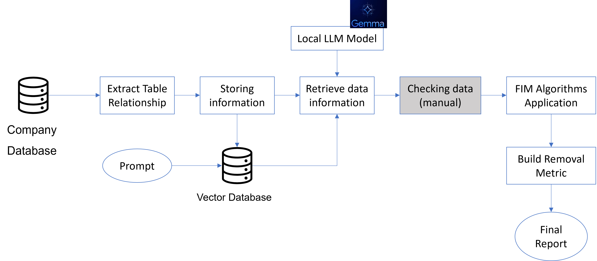
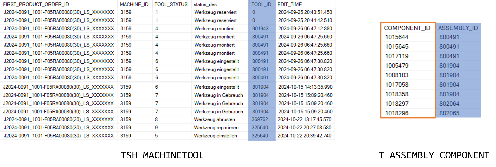
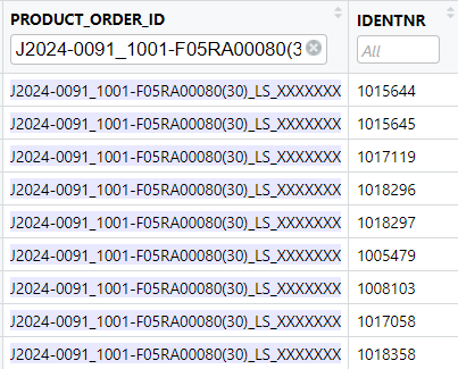
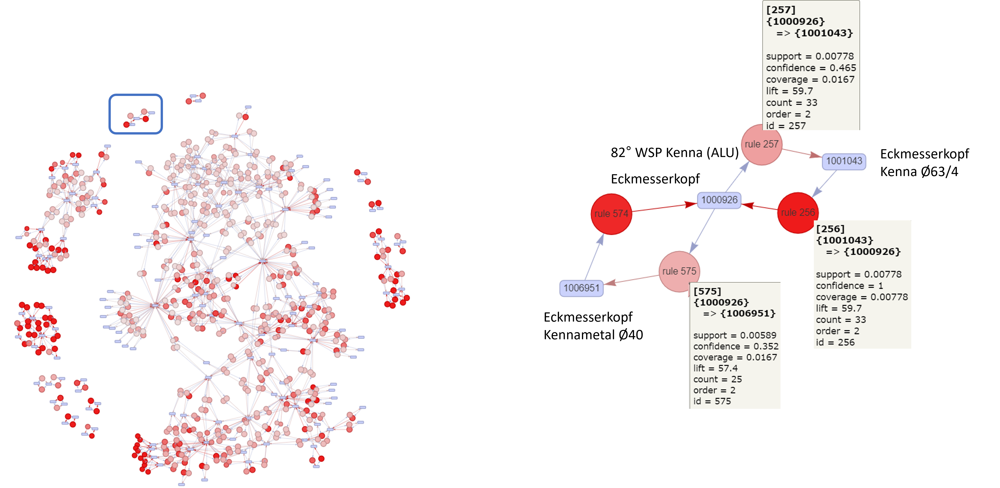
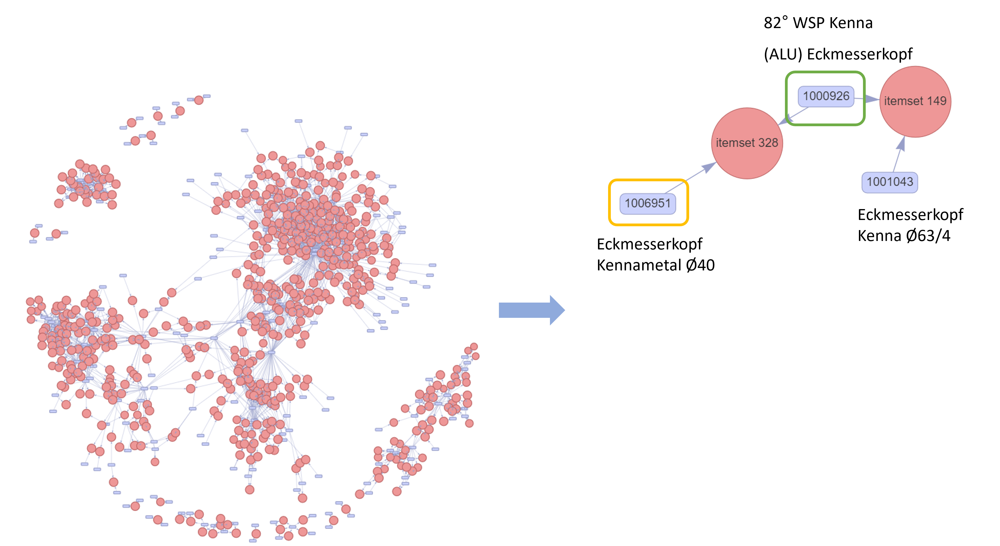

[[1]]
[1] "milk" "bread" "butter"
[[2]]
[1] "bread" "butter"
[[3]]
[1] "milk" "bread"
[[4]]
[1] "milk" "butter" "eggs"
[[5]]
[1] "bread" "butter" "jam" Frequent Itemset Mining (FIM)
Introduction

also called Market Basket Analysis
Frequent itemset mining helps in discovering associations and correlations among items in large datasets. These associations can then be used for tasks like:
Association Rule Mining (e.g., “If a customer buys bread, they are likely to buy butter”)
Recommendation systems
Inventory management
Cross-selling strategies
Key Concepts
Itemset
- a collection of one or more items (
{bread, butter})
Support
the frequency (often expressed as percentage) with which an itemset appears in the data set
- if
{bread, butter}appears in \(30\) out of \(100\) transactions, its support is \(30\%\)
- if
Frequent itemset
an itemset whose support is greater than or equal to a predefined, minimum threshhold
- if the minimum support is \(25\%\), then
{bread, butter}is a frequent itemset
- if the minimum support is \(25\%\), then
Transaction database
- a collection of transactions, where each transaction is a set of items
| Transaction ID | Items Purchased |
|---|---|
| T1 | milk, bread, butter |
| T2 | bread, butter |
| T3 | milk, bread |
| T4 | milk, butter, eggs |
| T5 | bread, butter, jam |
Simple example
What products are used?
| Transaction ID | Items Purchased |
|---|---|
| T1 | milk, bread, butter |
| T2 | bread, butter |
| T3 | milk, bread |
| T4 | milk, butter, eggs |
| T5 | bread, butter, jam |
milk, bread, butter, eggs, jam
Quick support count example
- What itemsets are present?
- What is the support for each itemset?
- In which transaction do the itemsets appear?
| Itemset | Support Count | Transaction |
|---|---|---|
| {bread} | 4 | T1, T2, T3, T5 |
| {milk} | 3 | T1, T3, T4 |
| {butter} | 4 | T1, T2, T4, T5 |
| {milk, bread} | 2 | T1, T3 |
| {bread, butter} | 3 | T1, T2, T5 |
| {milk, butter] | 2 | T1, T4 |
| {milk, bread, butter} | 1 | T1 |
Apriori Algorithm
The Apriori algorithm finds frequent itemsets in a dataset by building larger sets from smaller ones, using the principle that all subsets of a frequent itemset must also be frequent.
Transaction data
| Transaction ID | Items Purchased |
|---|---|
| T1 | milk, bread, butter |
| T2 | bread, butter |
| T3 | milk, bread |
| T4 | milk, butter, eggs |
| T5 | bread, butter, jam |
Support Threshold: 2 (itemset must appear two times to be considered frequent)
Step 1: Find Frequent 1-Itemsets (L1)
| 1-Itemset | Support Count |
|---|---|
| milk | 3 (T1, T3, T4) |
| bread | 4 (T1, T2, T3, T5) |
| butter | 4 (T1, T2, T4, T5) |
| eggs | 1 (T4) |
| jam | 1 (T5) |
frequent itemsets (L1): milk, bread, butter
Step 2: Generate Candidate 2-Itemsets (C2)
Generate all combinations of L1:
{milk, bread}{milk, butter}{bread, butter}
Count the support
| 2-Itemset | Support Count |
|---|---|
| {milk,bread} | 2 (T1, T3) |
| {milk, butter} | 2 (T1, T4) |
| {bread, butter} | 3 (T1, T2, T5) |
frequent itemsets (L1): {milk, bread}, {milk, butter}, {bread, butter}
Generate Candidate 3-Itemsets (C3)
Generate combinations of L2 that share a common subset
- only possible 3-itemset:
{milk, bread, butter}
- only possible 3-itemset:
Check the support:
| 3-Itemset | Support Count |
|---|---|
| {milk, bread, butter} | 1 (T1) |
- Termination: no 3-itemset meet the support requirement, algorithm stopped
Final Frequent Itemsets
- L1:
{milk},{bread},{butter} - L2:
{milk,bread},{milk,butter},{bread,butter}
Association Rule Mining (Apriori)
Association rule mining finds patterns or relationships between items in large datasets, such as products often bought together, focussing on those that meet a minimum confidence threshold (\(70\%\) in this example).
Key Definitions
- Support: How frequently an itemset appears in the data
- Confidence: How often items in \(Y\) appear in transactions that contain \(X\) in the rule \(X \rightarrow Y\) \[Confidence(X \rightarrow Y) = \frac{Support(X \cup Y)}{Support(X)}\]
- Lift: Measures whether \(X\) and \(Y\) appear together more often than expected if they were independent \[Lift(X \rightarrow Y) = \frac{Confidence(X \rightarrow Y)}{Support(Y)}\]
Frequent Itemsets (repetition)
- L1:
{milk},{bread},{butter} - L2:
{milk,bread},{milk,butter},{bread,butter}
Rules
| From | Rule | L2 | Support of L2 | L1 | Support of L1 | Confidence |
|---|---|---|---|---|---|---|
{milk,bread}
|
\(milk \rightarrow bread\) |
{milk,bread}
|
2 | milk | 3 | \(Confidence = \frac{2}{3} \approx 66.7\%\) |
| \(bread \rightarrow milk\) |
{milk,bread}
|
2 | bread | 4 | \(Confidence = \frac{2}{4} \approx 50\%\) | |
{milk,butter}
|
\(milk \rightarrow butter\) |
{milk,butter}
|
2 | milk | 3 | \(Confidence = \frac{2}{3} \approx 66.7\%\) |
| \(butter \rightarrow milk\) |
{milk,butter}
|
2 | butter | 4 | \(Confidence = \frac{2}{4} \approx 50\%\) | |
{bread,butter}
|
\(bread \rightarrow butter\) |
{bread,butter}
|
3 | bread | 4 | \(Confidence = \frac{3}{4} \approx 75\%\) |
| \(butter \rightarrow bread\) |
{bread,butter}
|
3 | butter | 4 | \(Confidence = \frac{3}{4} \approx 75\%\) |
Rule interpretation
| Rule | Confidence | Interpretation |
|---|---|---|
| \(bread \rightarrow butter\) | \(75\%\) | \(75\%\) of people who buy bread also buy butter |
| \(butter \rightarrow bread\) | \(75\%\) | \(75\%\) of people who buy butter also buy bread |
Lift (optional)
\[Lift = \frac{Confidence (bread \rightarrow butter)}{Support(butter)} = \frac{0.75}{0.8} = 0.9375 < 1\] \(Lift < 1\) means bread and butter co-occur less than expected if they were independent (only slightly).
\[Lift = \frac{Confidence (butter \rightarrow bread)}{Support(bread)} = \frac{0.75}{0.8} = 0.9375 < 1\]
\(Lift < 1\) means butter and bread co-occur less than expected if they were independent (only slightly).
Apriori in Code
Transactions raw
Transaction class
items
[1] {bread, butter, milk}
[2] {bread, butter}
[3] {bread, milk}
[4] {butter, eggs, milk}
[5] {bread, butter, jam} Apply apriori
# Mine frequent itemsets
frequent_items <- apriori(transactions,
parameter = list(supp = 0.4, target = "frequent itemsets"))Apriori
Parameter specification:
confidence minval smax arem aval originalSupport maxtime support minlen
NA 0.1 1 none FALSE TRUE 5 0.4 1
maxlen target ext
10 frequent itemsets TRUE
Algorithmic control:
filter tree heap memopt load sort verbose
0.1 TRUE TRUE FALSE TRUE 2 TRUE
Absolute minimum support count: 2
set item appearances ...[0 item(s)] done [0.00s].
set transactions ...[5 item(s), 5 transaction(s)] done [0.00s].
sorting and recoding items ... [3 item(s)] done [0.00s].
creating transaction tree ... done [0.00s].
checking subsets of size 1 2 3 done [0.00s].
sorting transactions ... done [0.00s].
writing ... [6 set(s)] done [0.00s].
creating S4 object ... done [0.00s]. items support count
[1] {milk} 0.6 3
[2] {bread} 0.8 4
[3] {butter} 0.8 4
[4] {bread, milk} 0.4 2
[5] {butter, milk} 0.4 2
[6] {bread, butter} 0.6 3 generate rules
Apriori
Parameter specification:
confidence minval smax arem aval originalSupport maxtime support minlen
0.7 0.1 1 none FALSE TRUE 5 0.4 1
maxlen target ext
10 rules TRUE
Algorithmic control:
filter tree heap memopt load sort verbose
0.1 TRUE TRUE FALSE TRUE 2 TRUE
Absolute minimum support count: 2
set item appearances ...[0 item(s)] done [0.00s].
set transactions ...[5 item(s), 5 transaction(s)] done [0.00s].
sorting and recoding items ... [3 item(s)] done [0.00s].
creating transaction tree ... done [0.00s].
checking subsets of size 1 2 3 done [0.00s].
writing ... [4 rule(s)] done [0.00s].
creating S4 object ... done [0.00s]. lhs rhs support confidence coverage lift count
[1] {} => {bread} 0.8 0.80 1.0 1.0000 4
[2] {} => {butter} 0.8 0.80 1.0 1.0000 4
[3] {bread} => {butter} 0.6 0.75 0.8 0.9375 3
[4] {butter} => {bread} 0.6 0.75 0.8 0.9375 3 Rule Visualization
lhs rhs support confidence coverage lift count
[1] {} => {bread} 0.8 0.80 1.0 1.0000 4
[2] {} => {butter} 0.8 0.80 1.0 1.0000 4
[3] {bread} => {butter} 0.6 0.75 0.8 0.9375 3
[4] {butter} => {bread} 0.6 0.75 0.8 0.9375 3 Classroom example
- Build toy supermarket
- students go shopping
- get transaction list and compute algorithm
Application
Master Thesis: Van Thuy Cuc Dang
Supervisor: Prof. Dr. Tim Weber
Cooperation Partner: SK Technology
Data Workflow
Raw data
Transactions
Tool Network (Apriori)
Tool Network (Eclat)
Discussion
- FIM used to find the tool network (dependencies)
- Needed: Tool removal metric
- Future: Predict Tool and cross link to product
Summary FIM
| Aspect | Apriori | Eclat | FP-Growth |
|---|---|---|---|
| Core Strategy | Candidate generation + pruning | TID-list intersections | Prefix-tree with recursive mining |
| Data Format | Horizontal | Vertical (TID sets) | Tree-based (compressed horizontal) |
| Candidate Gen | Yes | No | No |
| Speed | Slower on large/dense data | Faster than Apriori | Fastest on large/dense data |
| Memory Use | High | Moderate | Low |
| DB Scans | Multiple | Fewer | Typically 2 |
| Rule Support | Yes | Yes | Yes (with post-processing) |
| Best For | Small/medium sparse datasets | Medium-size frequent data | Large and dense datasets |
References
Hahsler, Michael. 2017. “arulesViz: Interactive Visualization of Association Rules with r.” The R Journal 9 (2): 163. https://doi.org/10.32614/rj-2017-047.
Michael Hahsler, Kurt Hornik, Bettina Grün. 2005. “<B>arules</b>- a Computational Environment for Mining Association Rules and Frequent Item Sets.” Journal of Statistical Software 14 (15). https://doi.org/10.18637/jss.v014.i15.

Copyright Prof. Dr. Tim Weber, 2024